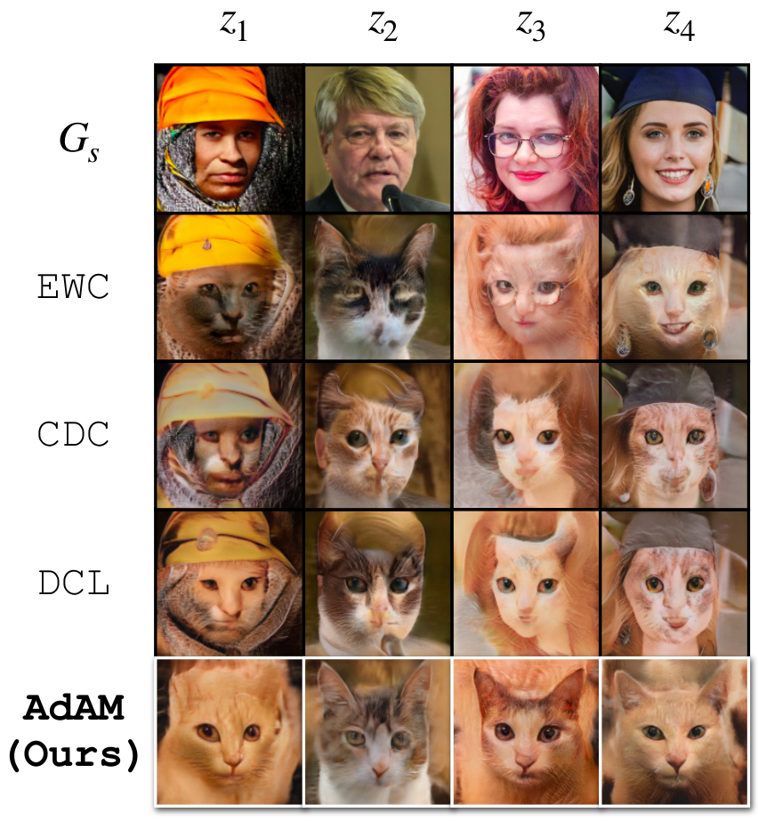
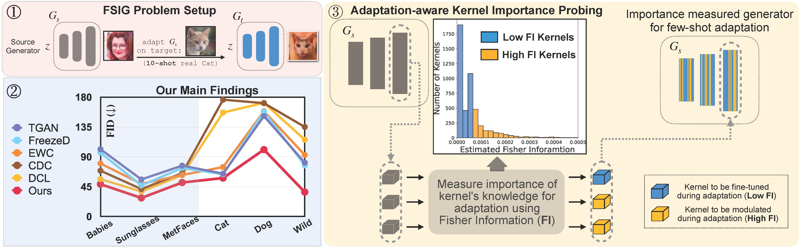
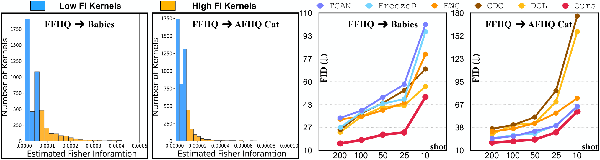

Abstract
Few-shot image generation (FSIG) aims to learn to generate new and diverse samples given an extremely limited number of samples from a domain, e.g., 10 training samples.
Recent work has addressed the problem using a transfer learning approach, leveraging a GAN pretrained on a large-scale source domain dataset and adapting that model to the target domain based on very limited target domain samples. Central to recent FSIG methods are knowledge preserving criteria, which aim to select a subset of source model's knowledge to be preserved into the adapted model.
However, a major limitation of existing methods is that their knowledge preserving criteria consider only source domain/source task, and they fail to consider target domain/adaptation task in selecting source model's knowledge, casting doubt on their suitability for setups of different proximity between source and target domain.
Our work makes two contributions. As our first contribution, we re-visit recent FSIG works and their experiments. Our important finding is that, under setups which assumption of close proximity between source and target domains is relaxed, existing state-of-the-art (SOTA) methods which consider only source domain/source task in knowledge preserving perform no better than a baseline fine-tuning method.
To address the limitation of existing methods, as our second contribution, we propose adaptation-aware kernel modulation to address general FSIG of different source-target domain proximity. Extensive experimental results show that the proposed method consistently achieves SOTA performance across source/target domains of different proximity, including challenging setups when source and target domains are farther apart.
Why the Target Domain Matters
Inappropriate knowledge transfer. Preserving source knowledge can carry human attributes, including caps, hairstyles, and glasses, into cat generation.

Overview

Contributions
We consider FSIG with transfer learning using very limited target samples, such as 10-shot adaptation.
- We discover that when the close proximity assumption between source-target domain is relaxed, SOTA FSIG methods, e.g., EWC (Li et al.), CDC (Ojha et al.), DCL (Zhao et al.), which consider only source domain/source task in knowledge preserving perform no better than a baseline fine-tuning method, e.g., TGAN, (Wang et al.).
- We propose a novel adaptation-aware kernel modulation for FSIG that achieves SOTA performance across source / target domains with different proximity.
Two-Stage Adaptation
Probe for the target. Freeze pretrained kernels and train low-rank modulation parameters for 500 iterations. Their Fisher information scores kernel importance for the adaptation task.
Adapt selectively. Restart from source weights: modulate important kernels with their base weights frozen, and directly finetune other kernels. Apply the procedure to both generator and discriminator.
Source: Section 4 and Algorithm 1.
Experiment Results


10-shot comparisons. Images in each column share the same latent input. The bottom row shows outputs of the pretrained source generator; the left panel contains the 10 real target samples.
Close target: Babies. AdAM generates images with refined details and diverse features. The original comparison reports both FID and Intra-LPIPS.
Distant target: Cat. The comparison shows overfitting in TGAN/FreezeD and inappropriate source knowledge in several preservation baselines.
AdAM preserves useful features such as posture and color. Its Intra-LPIPS approaches EWC's, while the qualitative results and FID indicate better generation quality.
Quantitative Results
10 target images · FFHQ source · StyleGAN2 · 256 × 256 resolution. FID uses 5,000 generated images and the full target dataset.
| Method | Babies | AFHQ- Cat | AFHQ- Wild |
|---|---|---|---|
| TGAN | 101.58 | 64.68 | 81.30 |
| TGAN+ADA | 97.91 | 80.16 | 81.55 |
| FreezeD | 96.25 | 63.60 | 77.18 |
| EWC | 79.93 | 74.61 | 92.83 |
| CDC | 69.13 | 176.21 | 135.13 |
| DCL | 56.48 | 156.82 | 115.93 |
| AdAM (Ours) | 48.83 | 58.07 | 36.87 |
Target-aware preservation. EWC, CDC, and DCL have higher FID than TGAN on Cat and Wild. AdAM improves over these baselines on both targets.
Source: Table 2, NeurIPS 2022 paper · Full table in HTML. Lower FID is better.
What Importance Probing Adds
Selection matters. Modulating all kernels without probing increases FID, especially for the distant targets shown below.

| Method | Babies | AFHQ- Cat | AFHQ- Wild |
|---|---|---|---|
| AdAM (w/o probing) | 54.46 | 82.41 | 81.24 |
| AdAM (Ours) | 48.83 | 58.07 | 36.87 |
Source: Figure 5, NeurIPS 2022 paper. The ablation modulates every kernel when probing is removed.
BibTeX
If you find our research useful in your work, please consider citing our paper:
@inproceedings{zhao2022fewshot,
title={Few-shot Image Generation via Adaptation-Aware Kernel Modulation},
author={Yunqing Zhao and Keshigeyan Chandrasegaran and Milad Abdollahzadeh and Ngai-man Cheung},
booktitle={Advances in Neural Information Processing Systems},
editor={Alice H. Oh and Alekh Agarwal and Danielle Belgrave and Kyunghyun Cho},
year={2022},
url={https://openreview.net/forum?id=Z5SE9PiAO4t}
}Meanwhile, we also demonstrate related research on few-shot image generation, via Removing In-Compatible Knowledge (RICK, CVPR-2023) for few-shot Transfer to fine-tune the pretrained GANs:
@inproceedings{zhao2023exploring,
title={Exploring incompatible knowledge transfer in few-shot image generation},
author={Zhao, Yunqing and Du, Chao and Abdollahzadeh, Milad and Pang, Tianyu and Lin, Min and Yan, Shuicheng and Cheung, Ngai-Man},
booktitle={Proceedings of the IEEE/CVF Conference on Computer Vision and Pattern Recognition},
pages={7380--7391},
year={2023}
}